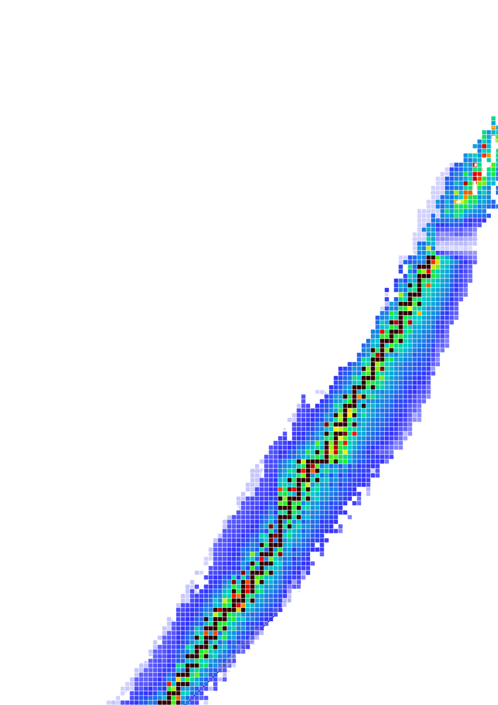

Island of stability

Дизайн
Алиса Воробей
Анимация
Анна Комкова
Остров стабильности — звучит для меня как забавная шутка. Это понятие из физики, но слишком уж злободневное название придумали для него учёные. Сейчас канун нового года, так что этот плакат будет моим пожеланием на 2026. Желаю всем попасть на остров стабильности!
Алиса Воробей